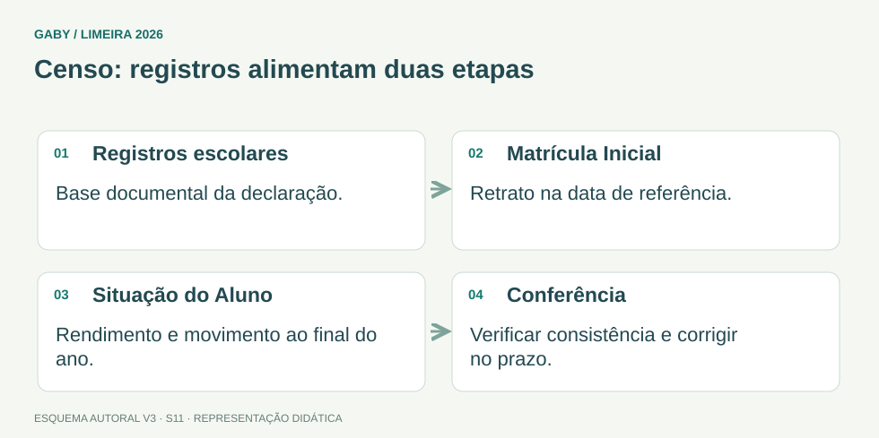

Objetivos do módulo
- Entender finalidade geral do Censo Escolar da Educação Básica.
- Reconhecer a importância de dados corretos de escola, turmas, matrículas, profissionais e alunos.
- Aplicar princípios de conferência, consistência e responsabilidade no fornecimento de informações.
- Relacionar censo, planejamento educacional e registros da secretaria.
Censo: registros alimentam duas etapas

Descrição em texto do esquema
- Registros escolares: Base documental da declaração.
- Matrícula Inicial: Retrato na data de referência.
- Situação do Aluno: Rendimento e movimento ao final do ano.
- Conferência: Verificar consistência e corrigir no prazo.
Oficina visual · aplique o esquema
Por que uma transferência registrada pela escola precisa ser coerente com a informação declarada no Censo?
Atividade autoral complementar da V3. Registre sua resposta; a resolução está no arquivo de gabarito e revisão.
Mapa do conteúdo
1. O que é o Censo Escolar
O Censo Escolar é o principal levantamento estatístico da educação básica brasileira. É realizado anualmente, coordenado pelo Inep em regime de colaboração com as secretarias estaduais, distrital e municipais e com participação das escolas públicas e privadas. Tem caráter declaratório e é organizado em duas etapas: a primeira reúne dados da matrícula inicial (estabelecimentos, gestores, turmas, estudantes e profissionais escolares em sala); a segunda registra movimento e rendimento ao final do ano letivo.
A declaração é obrigatória para as escolas de educação básica e a qualidade do censo depende da qualidade dos registros administrativos e acadêmicos que o alimentam. Diretores e dirigentes respondem pela veracidade das informações declaradas, conforme as regras do processo censitário.
2. Tipos de informação
O levantamento envolve informações sobre escolas, matrículas, turmas, etapas/modalidades, profissionais e características relevantes da oferta educacional. Os campos e calendários específicos devem ser conferidos nas orientações oficiais do ciclo correspondente.
O secretário não deve “estimar” dados quando existe registro oficial: deve usar fontes consistentes e conferir divergências.
3. Relação com escrituração escolar
Matrícula registrada incorretamente, duplicidade, aluno transferido sem atualização ou turma cadastrada de forma inadequada podem produzir inconsistências. A escrituração escolar confiável reduz problemas no censo.
Antes de declarar dados, a unidade deve promover conferências de consistência conforme os procedimentos da rede e do sistema utilizado.
4. Responsabilidade e correção
Dados educacionais podem repercutir em estatísticas e políticas. Por isso, correções devem seguir janelas e procedimentos oficiais, com base documental. A pressa não justifica informação fictícia.
Quando houver dúvida sobre um campo, consulte manual/orientação oficial e responsável da rede em vez de preencher por interpretação pessoal.
5. Uso das informações
Dados consolidados ajudam a conhecer número de matrículas, oferta por etapa, características das escolas e outros indicadores. Servem de base para planejamento, monitoramento e decisões de política educacional.
Censo não substitui a escrituração escolar; ele utiliza e consolida informações produzidas pela rotina escolar.
Exemplos resolvidos passo a passo
Exemplo 1
Situação: Aluno foi transferido, mas permanece indevidamente ativo no cadastro utilizado para declaração.
Exemplo 2
Situação: Campo do sistema não é compreendido pelo servidor.
Exemplo 3
Situação: Número de matrículas do relatório local diverge do sistema censitário.
Pegadinhas e erros frequentes
- Tratar o censo como pesquisa sem impacto.
- Preencher por estimativa quando há registro oficial.
- Não atualizar transferências/movimentações.
- Corrigir total sem localizar a causa da divergência.
- Usar orientação de ano anterior sem verificar ciclo atual.
Resumo de prova
- Censo Escolar = levantamento estatístico da educação básica.
- Qualidade depende de registros escolares corretos.
- Use fonte documental, não estimativa.
- Conferência de consistência é essencial.
- Dúvida de campo deve ser resolvida com orientação oficial.
- Informações subsidiam planejamento e políticas públicas.
Exercícios do módulo
Resolva sem consultar o arquivo de gabarito. As questões são autorais e construídas para treinar os conceitos do edital.
- registrar somente notas
- funcionar como concurso de escolas
- produzir informações estatísticas sobre a educação básica para planejamento e políticas
- substituir todos os históricos escolares
- na memória do atendente
- em registros escolares confiáveis
- em estimativas pessoais
- em boatos
- gerar inconsistência nos dados
- melhorar automaticamente a qualidade
- dispensar conferência
- não ter qualquer relação com matrícula
- deve adivinhar
- deixar valor aleatório
- copiar outra escola
- deve consultar orientação oficial/responsável da rede
- substitui atas
- dispensa arquivo
- não substitui a escrituração; utiliza informações dela
- elimina necessidade de matrícula
- apagando cadastros
- identificando nominal/documentalmente a origem
- somando um número arbitrário
- ignorando
- planejamento e políticas educacionais
- somente decoração de relatórios
- apenas marketing privado
- nenhuma decisão pública
- são imutáveis para sempre
- não precisam ser lidas
- podem ser inventadas pela escola
- podem mudar entre ciclos e devem ser verificadas
- alterar matrículas sem respaldo
- ignorar duplicidades
- realizar conferência de consistência
- eliminar documentos de origem
- ausência de revisão
- cuidado, documentação e correção formal quando necessária
- preenchimento rápido a qualquer custo
- informação aproximada sempre
Quando terminar, abra Secretário de Escola 11 - Censo Escolar e Informações Educacionais - Gabarito e Revisão.
Checklist de domínio
- ☐ Entender finalidade geral do Censo Escolar da Educação Básica.
- ☐ Reconhecer a importância de dados corretos de escola, turmas, matrículas, profissionais e alunos.
- ☐ Aplicar princípios de conferência, consistência e responsabilidade no fornecimento de informações.
- ☐ Relacionar censo, planejamento educacional e registros da secretaria.
Meta do módulo: 80% ou mais nas questões, sem depender de consulta.
Referências e conteúdos auxiliares
- Inep — Censo Escolar: etapas da coletaMatrícula Inicial e Situação do Aluno, com acesso às orientações de preenchimento.
- Inep — Perguntas frequentes do Censo EscolarOrientações, registros de referência e links para os cadernos da edição correspondente.
Referências externas de apoio consultadas para a V3 em 27/09/2026. A origem das questões é o material autoral do projeto; estes links não indicam que uma instituição publicou ou validou os exercícios. As páginas externas precisam de internet. Em informática, confira a versão do programa; em legislação, observe o recorte e as regras de atualização do edital.